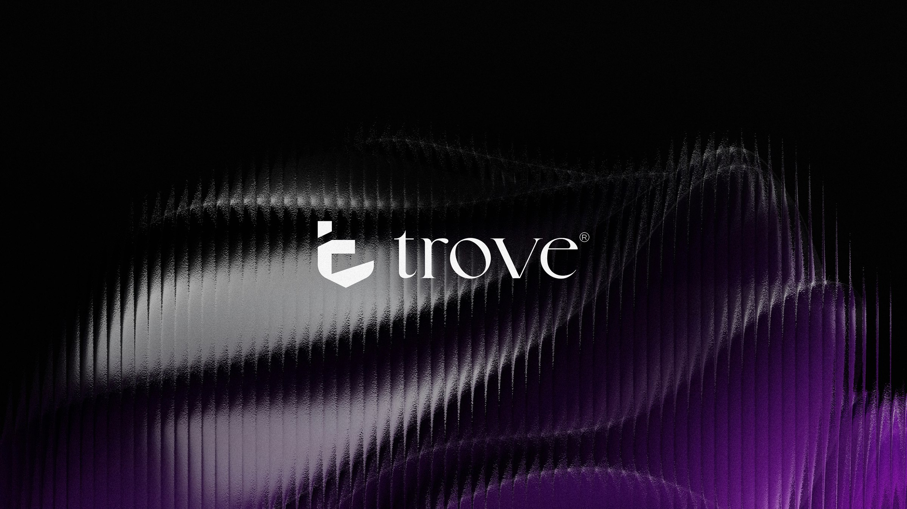
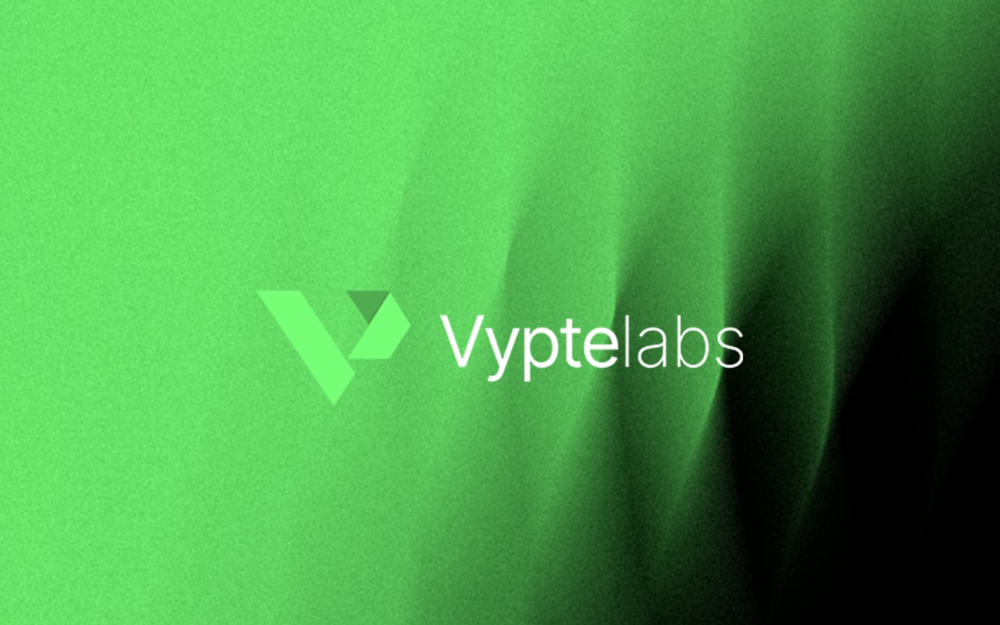
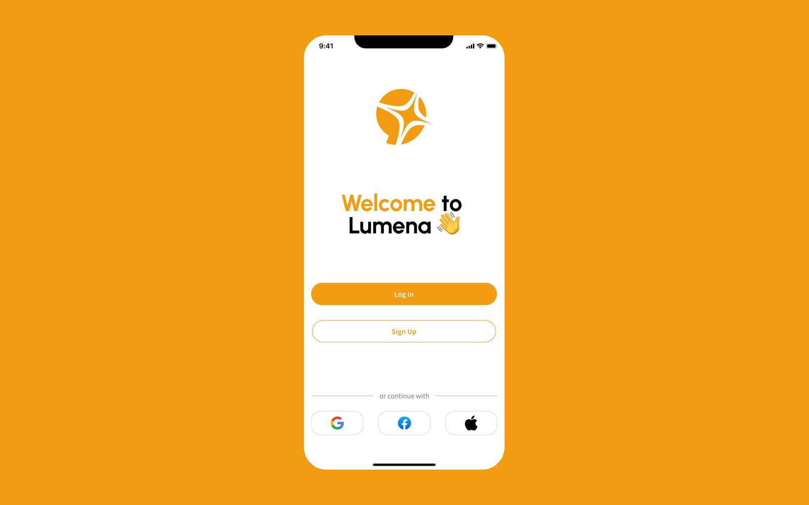
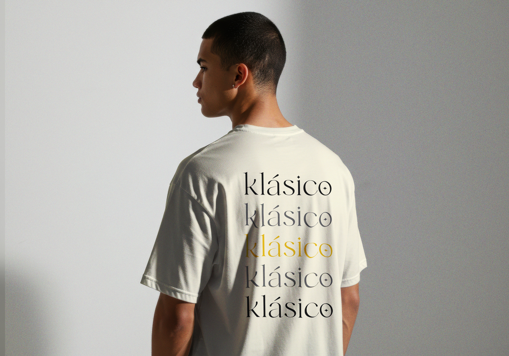
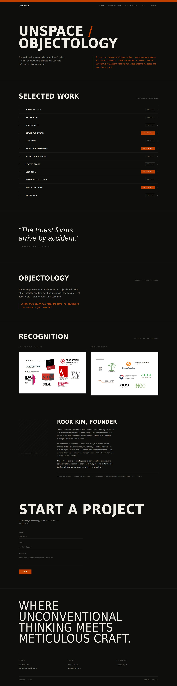
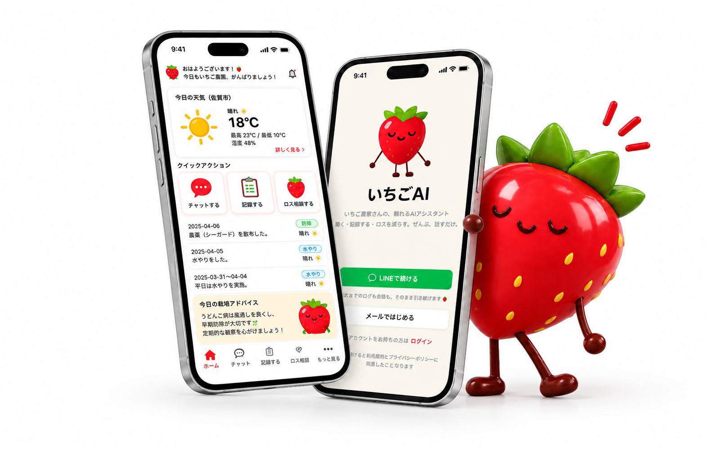
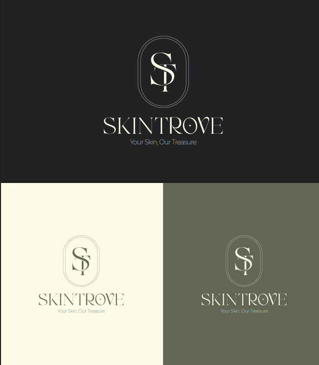

Trove
Self-initiated institutional fintech brand — identity, motion, environment and product.

Vyptelabs
Infrastructure company identity applied across product, merch, web and environment.

Lumena AI
AI assistant identity and nineteen screens designed in every real state.

Klásico
Fashion label rebrand — display wordmark with ornament hidden inside the letterforms.

UnSPACE
Architecture studio's site rebuilt from an image grid into a navigable fifteen-project archive.

いちごAI
Japanese-language voice-first assistant for strawberry growers — twenty screens.

SkinTrove
Skincare brand identity — monogram, palette, pattern and launch campaign.